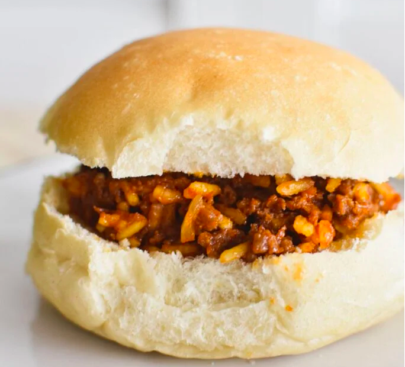

Fluffy, sweet, and often filled with jam or topped with coconut icing, Aussie buns are a bakery favorite down under. Soft and satisfying, they’re perfect with tea or as a cozy homemade treat.
-<>- HERE IS THE RECIPE TO MAKE YOUR VERY OWN AUSSIE BUNS AT HOME -<>-
